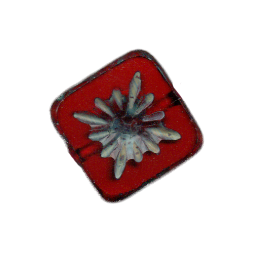

<!DOCTYPE html>
<html lang="kr"></html>
<head>
  <meta charset="UTF-8">
  <meta http-equiv="X-UA-compitable" content="IE-edge">
  <meta name="viewport" content="width=device-width", initial-scale="1.0">
  <title>f</title>
  <link href="f.css" rel="stylesheet">
  <script type="text/javascript">
    document.oncontextmenu = function(){return false;}
    function redirectToRandomPage() { 
            // Array of specific pages on the website 
            const pages = [ 
                'index4.html', 
                'index11.html', 
                'index18.html', 
                'index25.html' 
            ]; 
            // Generate a random index 
            const randomIndex = Math.floor(Math.random() * pages.length); 
            // Redirect to the randomly selected page 
            window.location.href = pages[randomIndex]; 
    }
  </script>
</head>
<body oncontextmenu="return false" onselectstart="return false" ondragstart="return false" onkeydown="return false">
  <div class="box-container">
      <div class="box-item1">
        <div class="map">
          <a onclick="redirectToRandomPage()">
            
          </a>
          <p>현실과 픽션 엮기</p>
          <div class="comment">
            <p>현실과 픽션 엮기는 “사회 현실은 픽션이다”라는 해러웨이의 선언에서 출발하였다. 현실과 픽션 사이의 이분법을 흐리고, 여성 노동자의 리얼리즘적 사진과 공상적 텍스트를 병치하여 아이러니를 만들어낸다.</p>
          </div>
      </div>
    </div>
    <div class="box-item2">
      
    </div>
    <div class="box-item3">
      <a href="c4.html">
        </a>
        <span class="text1">c. 민첩하고<br>가느다란 손가락</span>
      <a href="d4.html">
        </a>
        <span class="text2">d. 픽션 속<br>사이보그적 여성</span>
      <a href="m4.html">
        </a>
        <span class="text3">m. 사이보그<br>이해하기</span>
      <a href="o4.html">
        </a>
        <span class="text4">o. 현실은 픽션이고,<br>픽션은 현실이다.</span>
    </div>
  </div>
</body>